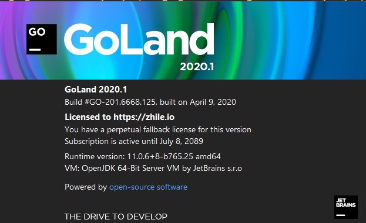
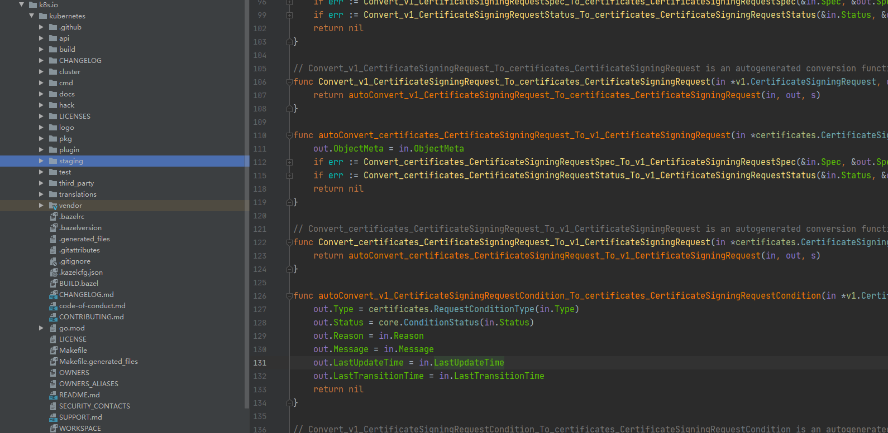
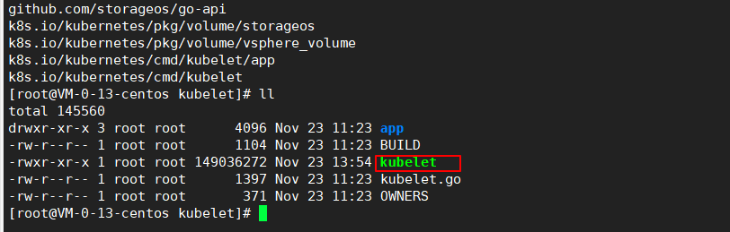
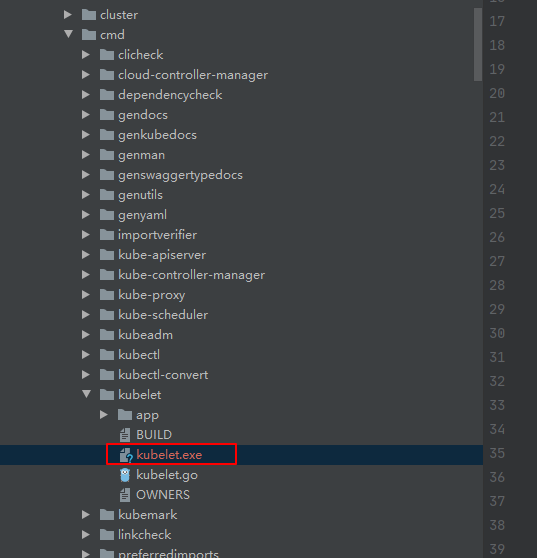

本篇文章主要介绍了如何在windows下通过goland阅读k8s源码。
下载及idea加载GO代码 这边大家可以百度一下，搜一下go的下载及破解版goland的下载，网上教程很多，按照顺序按照下载即可。我这里的版本如下
go: 1.15
1 2 C:\Users\nieweixing>go version go version go1.15 windows/amd64

从github上克隆源码到本地 首先创建一个gopath目录,我们这里用的是
然后在go-code目录下创建一个src/k8s.io,最后我们存放代码的目录为
我们切换到k8s.io目录，执行如下命令clone代码，注意需要加上core.symlinks=true这个参数，源码中有很多软连接，不加这个参数会找不到依赖。
1 2 3 4 5 git clone -c core.symlinks= true https://github.com/kubernetes/kubernetes git clone -c core.symlinks= true -b xxxx https://github.com/kubernetes/kubernetes
goland查看源码并分析目录结构 我们打开goland后配置好$GOPATH,然后查看下对应源码即可。

下面我们简单介绍下k8s源码目录的作用
1 2 3 4 5 6 7 8 9 10 11 12 13 14 15 16 17 18 19 20 21 22 23 24 25 26 27 28 29 30 31 32 33 34 35 36 |--api // 存放api规范相关的文档 |------api-rules // 已经存在的违反Api规范的api |------openapi-spec //OpenApi 规范 |--build // 构建和测试脚本 |------run .sh // 在容器中运行该脚本，后面可接多个命令：make, make cross 等 |------copy-output .sh // 把容器中_output/dockerized/bin目录下的文件拷贝到本地目录 |------make-clean .sh // 清理容器中和本地的_output目录 |------shell .sh // 容器中启动一个shell终端 |------ ...... |--cluster // 自动创建和配置kubernetes集群的脚本，包括networking, DNS, nodes等 |--cmd // 内部包含各个组件的入口，具体核心的实现部分在pkg目录下 |--hack // 编译、构建及校验的工具类 |--logo // kubernetes的logo |--pkg // 主要代码存放类，后面会详细补充该目录下内容 |------kubeapiserver |------kubectl |------kubelet |------proxy |------registry |------scheduler |------security |------watch |------ ...... |--plugin |------pkg/admission // 认证 |------pkg/auth // 鉴权 |--staging // 这里的代码都存放在独立的repo中，以引用包的方式添加到项目中 |------k8s .io/api |------k8s .io/apiextensions-apiserver |------k8s .io/apimachinery |------k8s .io/apiserver |------k8s .io/client-go |------ ...... |--test // 测试代码 |--third_party // 第三方代码，protobuf、golang-reflect等 |--translations // 不同国家的语言包，使用poedit查看及编辑
Kubernetes源码编译 我们知道k8s的运行访问有2种方式，一种是二进制，还有一种就是docker镜像的方式，下面我们来讲一下如何将源码编译成二进制和镜像的方式。
二进制编译kubernetes 编译全部组件 这里我们以在centos7上作为示例
1 2 3 4 5 # yum install go -y # mkdir -p /root/go/src/k8s.io # git clone https://github.com/kubernetes/kubernetes # cd /root/go/src/k8s.io/kubernetes # KUBE_BUILD_PLATFORMS=linux/amd64 make
在这里我们编译apiserver的时候会出现一个错误，提示我们app\server.go:477:70: undefined: “k8s.io/kubernetes/pkg/generated/openapi”.GetOpenAPIDefinitions。
在pkg/generated/openapi确实没有这个函数。这个函数是在zz_generated.openapi.go，我们需要在/root/go/src/k8s.io/kubernetes下执行
1 2 3 4 5 6 7 8 9 # cd /root/go/src/k8s.io/kubernetes # make generated_files # ls -l pkg/generated/openapi total 2384 -rw-r--r-- 1 root root 1216 Nov 23 11 :23 BUILD -rw-r--r-- 1 root root 621 Nov 23 11 :23 doc.go -rw-r--r-- 1 root root 1533 Nov 23 11 :23 openapi_test.go -rw-r--r-- 1 root root 131 Nov 23 11 :23 OWNERS -rw-r--r-- 1 root root 2423572 Nov 23 12 :41 zz_generated.openapi.go
这里我们发现已经zz_generated.openapi.go生成在pkg/generated/openapi目录下，如果你在windows也有代码，那么你可以把这个文件拷贝到对应目录下。
现在我们再执行编译命令，然后编译好的二进制文件在/root/go/src/k8s.io/kubernetes/_output/bin这个目录下
1 2 3 4 5 6 7 8 9 10 11 12 13 14 15 16 17 18 19 20 21 22 23 24 25 26 27 28 29 [root@VM-0 -13 -centos kubernetes] +++ [1123 13 :45 :25 ] Building go targets for linux/amd64: cmd /kube-proxy cmd /kube-apiserver cmd /kube-controller-manager cmd /kubelet cmd /kubeadm cmd /kube-scheduler vendor/k8s.io/kube-aggregator vendor/k8s.io/apiextensions-apiserver cluster/gce/gci/mounter cmd /kubectl cmd /gendocs cmd /genkubedocs cmd /genman cmd /genyaml cmd /genswaggertypedocs cmd /linkcheck vendor/github.com/onsi/ginkgo/ginkgo test/e2e/e2e.test cluster/images/conformance/go-runner cmd /kubemark vendor/github.com/onsi/ginkgo/ginkgo test/e2e_node/e2e_node.test [root@VM-0 -13 -centos kubernetes] apiextensions-apiserver e2e_node.test genman go2make kube-aggregator kubelet linkcheck conversion-gen e2e.test genswaggertypedocs go-bindata kube-apiserver kubemark mounter deepcopy-gen gendocs genyaml go-runner kube-controller-manager kube-proxy openapi-gen defaulter-gen genkubedocs ginkgo kubeadm kubectl kube-scheduler prerelease-lifecycle-gen
编译单个组件 我们可以只编译某一个组件，下面我们来演示如何只编译kubelet的二进制文件
在linux和window下都是同样的方式，只是编译的平台不一样，生成的二进制文件不一样，window下生产kubelet.exe,linux下生产kubelet这个二进制执行文件
1 2 # cd $GOPATH /src/k8s.io/kubernetes/cmd/kubelet # go build -v
执行编译完成后，在kubelet目录下会存在可执行的kubelet二进制文件


docker镜像编译kubernetes 我们这里下载的是最新的源码，如果拉取不到国外镜像，可以执行下面命令拉取镜像然后上传到本地机器
1 2 3 4 5 6 7 8 9 10 11 12 13 docker pull mirrorgooglecontainers/pause-amd64:3.1 docker pull zhuyuhua/kube-cross:v1.15 .2 -1 docker pull mirrorgooglecontainers/debian-base-amd64:0.4 .0 docker pull mirrorgooglecontainers/debian-iptables-amd64:v11.0 docker pull mirrorgooglecontainers/debian-hyperkube-base-amd64:0.12 .0 docker pull litmuschaos/go-runner:latest docker tag mirrorgooglecontainers/pause-amd64:3.1 k8s.gcr.io/build-image/pause-amd64:3.1 docker tag zhuyuhua/kube-cross:v1.15 .2 -1 k8s.gcr.io/build-image/kube-cross:v1.15 .2 -1 docker tag mirrorgooglecontainers/debian-base-amd64:0.4 .0 k8s.gcr.io/build-image/debian-base-amd64:0.4 .0 docker tag mirrorgooglecontainers/debian-iptables-amd64:v11.0 k8s.gcr.io/build-image/debian-iptables:buster-v1.3 .0 docker tag mirrorgooglecontainers/debian-hyperkube-base-amd64:0.12 .0 k8s.gcr.io/build-image/debian-hyperkube-base-amd64:0.12 .0 docker tag litmuschaos/go-runner:latest k8s.gcr.io/build-image/go-runner:buster-v2.0 .1
为了防止从远程拉取镜像，我们可以修改下$GOPATH\src\k8s.io\kubernetes\build\lib\release.sh的配置
1 2 3 4 5 "${DOCKER[@]} " build ${docker_build_opts:+"${docker_build_opts} " } -q -t "${docker_image_tag} " "${docker_build_path} " >/dev/null 改成如下 "${DOCKER[@]} " build -q -t "${docker_image_tag} " "${docker_build_path} " >/dev/null
然后执行如下命令进行打包
1 2 3 4 5 6 7 8 9 10 11 12 13 14 15 16 17 18 19 20 21 22 23 24 25 26 27 [root@ VM-0 -3 -centos kubernetes]# KUBE_GIT_VERSION=v1.19 .0 -alpha.0 KUBE_FASTBUILD=true KUBE_BUILD_PULL_LATEST_IMAGES=n make release-images +++ [1123 17 :20 :07 ] Verifying Prerequisites.... +++ [1123 17 :20 :07 ] Building Docker image kube-build:build-a3ee5ddec9-5 -v1.15 .2 -1 +++ [1123 17 :20 :10 ] Syncing sources to container +++ [1123 17 :20 :13 ] Running build command... +++ [1123 17 :21 :01 ] Building go targets for linux/amd64: cmd/kube-apiserver cmd/kube-controller-manager cmd/kube-scheduler cmd/kube-proxy vendor/github.com/onsi/ginkgo/ginkgo test/e2e/e2e.test cluster/images/conformance/go-runner cmd/kubectl +++ [1123 17 :21 :42 ] Syncing out of container +++ [1123 17 :21 :51 ] Building images: linux-amd64 +++ [1123 17 :21 :51 ] Starting docker build for image: kube-apiserver-amd64 +++ [1123 17 :21 :51 ] Starting docker build for image: kube-controller-manager-amd64 +++ [1123 17 :21 :51 ] Starting docker build for image: kube-scheduler-amd64 +++ [1123 17 :21 :51 ] Starting docker build for image: kube-proxy-amd64 +++ [1123 17 :21 :51 ] Building conformance image for arch: amd64 +++ [1123 17 :22 :26 ] Deleting docker image k8s.gcr.io/kube-proxy-amd64:v1.19 .0 -alpha.0 +++ [1123 17 :22 :30 ] Deleting docker image k8s.gcr.io/kube-scheduler-amd64:v1.19 .0 -alpha.0 +++ [1123 17 :22 :37 ] Deleting docker image k8s.gcr.io/kube-apiserver-amd64:v1.19 .0 -alpha.0 +++ [1123 17 :22 :37 ] Deleting docker image k8s.gcr.io/kube-controller-manager-amd64:v1.19 .0 -alpha.0 +++ [1123 17 :22 :51 ] Deleting conformance image k8s.gcr.io/conformance-amd64:v1.19 .0 -alpha.0 +++ [1123 17 :22 :51 ] Docker builds done
编译完成后,可以到对应的目录下查找镜像，并通过docker load < * 来加载镜像,然后通过修改组件的yaml的镜像名称即可。
1 2 3 4 5 6 7 8 9 10 11 12 13 14 [root@ VM-0 -3 -centos amd64]# ll total 2101008 -rw-r--r-- 1 root root 298798080 Nov 23 17 :22 conformance-amd64.tar -rw------- 2 root root 619204608 Nov 23 17 :22 kube-apiserver.tar -rw------- 2 root root 612844544 Nov 23 17 :22 kube-controller-manager.tar -rw------- 2 root root 103392256 Nov 23 17 :22 kube-proxy.tar -rw------- 2 root root 517171712 Nov 23 17 :22 kube-scheduler.tar [root@ VM-0 -3 -centos amd64]# pwd /root/go/src/k8s.io/kubernetes/_output/release-images/amd64 [root@ VM-0 -3 -centos amd64]# docker load < kube-apiserver.tar 5 eebc1b5676b: Loading layer [==================================================>] 163.4 MB/163.4 MBLoaded image: k8s.gcr.io/kube-apiserver-amd64:v1.19 .0 -alpha.0 [root@ VM-0 -3 -centos amd64]# docker images|grep apis k8s.gcr.io/kube-apiserver-amd64 v1.19 .0 -alpha.0 c1ac6c895896 20 minutes ago 613 MB
欢迎访问 Vashon 的博客，博客和文章在完善中，请大家耐心等待。 若有问题或者有好的建议欢迎留言，笔者看到之后会及时回复。
为正常使用来必力评论功能请激活JavaScript